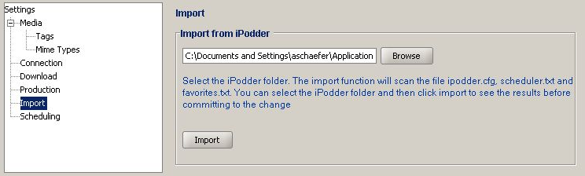
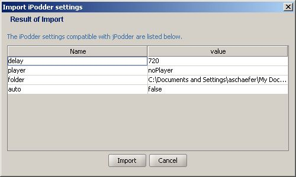

Allows you to select the folder of iPodder's configuration files.

The Import view contains these fields:
| Import from iPodder | The current location of the iPodder configuration directory |
| Browse | Brings up a helping you to select the recording program from your computer |
| Import | Brings up a Import Dialog (see below) to import or discard the iPodder data |
Clicking on the Import button will bring up this dialog:

The Import Dialog contains these fields:
| Name | Name of the data to be imported |
| Value | Value that is going to be imported |
| Import | Adds the iPodder data into jPodder |
| Cancel | Discards the data and returns |